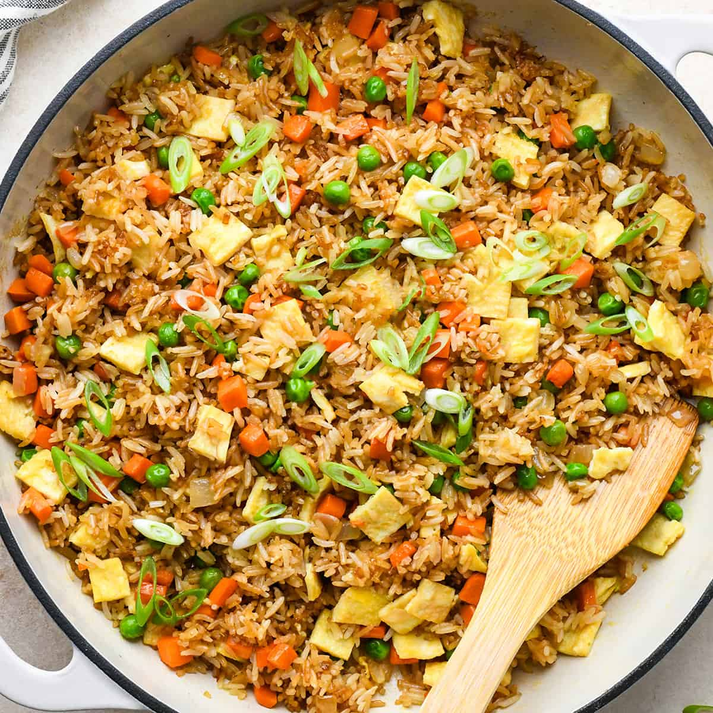
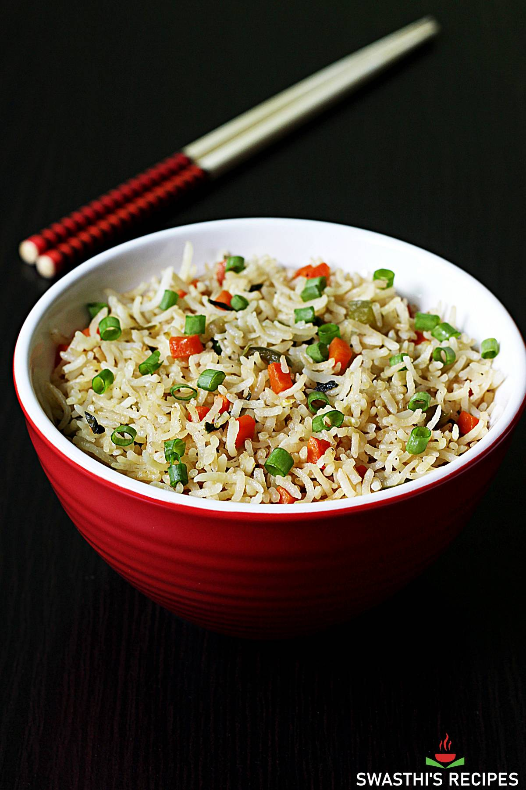

Fried rice recipe

MMhhhh!!!, Does it not look good huuh?,
I know it does. But chill and prepare to learn how this amazing and easy fried is being made, you wont regret
Relax, it is not difficult as you think, its as easy to make, and super quick, lets act like body builders and make some rice, Now lets dive into it
Ingridients
- ⅔ cup chopped baby carrots
- ½ cup frozen green peas
- 2 tablespoons vegetable oil
- 1 clove garlic, minced, or to taste (Optional)
- 2 large eggs
- 3 cups leftover cooked white rice
- 1 tablespoon soy sauce, or more to taste
- 2 teaspoons sesame oil, or to taste
Now since well we have gathered the ingridients, we can get to work, below are the steps you should follow
Steps
- Gather the ingridients
- Place carrots in a small saucepan and cover with water. Bring to a low boil and cook for 3 to 5 minutes. Stir in peas, then immediately drain in a colande
- In your pan,Pour in vegetable oil, then stir in carrots, peas, and garlic; cook for about 30 seconds. Add eggs; stir quickly to scramble eggs with vegetables
- While they are getting fried, and rice and stir,Add soy sauce and toss rice to coat. Drizzle with sesame oil and toss again
- And done, remember what i said? a quick meal it is, Now you can enjoy it
